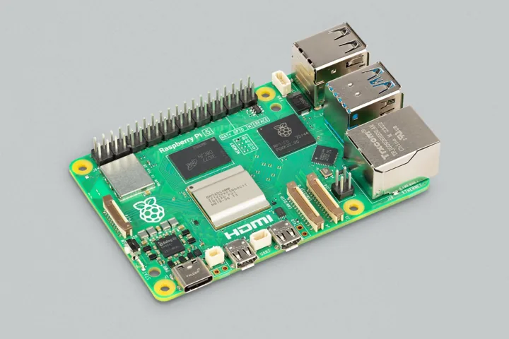

Systèmes embarqués

Crédit : Raspberry Pi Ltd, documentation officielle. Photographie originale et provenance.
Ces photographies de matériel illustrent les domaines techniques. Elles ne représentent ni les locaux des recruteurs, ni leurs salariés, ni un partenariat avec Raspberry Pi.

Crédit : Raspberry Pi Ltd, documentation officielle. Photographie originale et provenance.
Crédit : Raspberry Pi Ltd, documentation officielle. Photographie originale et provenance.
Licence des deux photographies et de leurs versions adaptées : Creative Commons Attribution – Partage dans les mêmes conditions 4.0 International (CC BY-SA 4.0). Licence publiée par la source.
Adaptations par Offres Fraîches : réduction de dimensions, compression WebP et recadrage d’affichage. Aucune génération d’image par IA. Les marques présentes sur le matériel restent la propriété de leurs titulaires.